import pandas as pd
import numpy as np
import seaborn as sns
import matplotlib.pyplot as plt
from scipy.interpolate import UnivariateSpline
from sklearn.linear_model import LinearRegressionfrom google.colab import drive
drive.mount('/content/drive')Mounted at /content/drive
behave_df = pd.read_csv("/content/drive/MyDrive/Datasets/data.csv")
quest_df = pd.read_csv("/content/drive/MyDrive/Datasets/quest.csv")
info_df = pd.read_csv("/content/drive/MyDrive/Datasets/info.csv")print("behave_df:", "subjectID" in behave_df.columns)
print("quest_df:", "subjectID" in quest_df.columns)
print("info_df:", "subjectID" in info_df.columns)behave_df: True
quest_df: True
info_df: Truebehave_df.head(5)| Unnamed: 0 | X | subjectID | assigned_condition | block_nr | trial_nr | grid | initial_opened | selected_choice | reward | average_reward | time_elapsed | rt | start_time | end_time | |
|---|---|---|---|---|---|---|---|---|---|---|---|---|---|---|---|
| 0 | 1 | 1001 | 44r44zmrtvl59ml3llcql4w4 | NaN | 0 | 0 | 51 | 111 | 101 | 56.861885 | 65.500000 | 45268 | 3932 | 30/08/2022 07:11:36 | 30/08/2022 07:16:32 |
| 1 | 2 | 1002 | 44r44zmrtvl59ml3llcql4w4 | NaN | 0 | 1 | 51 | 111 | 110 | 82.133990 | 71.000000 | 48531 | 3249 | 30/08/2022 07:11:36 | 30/08/2022 07:16:32 |
| 2 | 3 | 1003 | 44r44zmrtvl59ml3llcql4w4 | NaN | 0 | 2 | 51 | 111 | 101 | 57.101132 | 67.500000 | 50468 | 1930 | 30/08/2022 07:11:36 | 30/08/2022 07:16:32 |
| 3 | 4 | 1004 | 44r44zmrtvl59ml3llcql4w4 | NaN | 0 | 3 | 51 | 111 | 100 | 61.086212 | 66.200000 | 51964 | 1489 | 30/08/2022 07:11:36 | 30/08/2022 07:16:32 |
| 4 | 5 | 1005 | 44r44zmrtvl59ml3llcql4w4 | NaN | 0 | 4 | 51 | 111 | 99 | 70.195297 | 66.833333 | 53662 | 1690 | 30/08/2022 07:11:36 | 30/08/2022 07:16:32 |
quest_df.head(5)| Unnamed: 0 | subjectID | aq_tot | aq_tot_bin | asrs_tot | sds_tot | paq_tot | cati_tot | |
|---|---|---|---|---|---|---|---|---|
| 0 | 1 | 4rrw4vlw3mrs9v533ztqt4tq | NaN | NaN | NaN | NaN | NaN | NaN |
| 1 | 2 | 4mrr4t6ww3s6tmsthrwqv4ss | NaN | NaN | NaN | NaN | NaN | NaN |
| 2 | 3 | 45r34t4rh6445vs4h3mqt434 | NaN | NaN | NaN | NaN | NaN | NaN |
| 3 | 4 | 45r54c5m4cqzl3ctz9lqr4z3 | 91.0 | 12.0 | 41.0 | 34.0 | 127.0 | NaN |
| 4 | 5 | lltv564rqmcvzqq9c3s5lmr9 | 134.0 | 31.0 | 55.0 | 45.0 | 110.0 | NaN |
info_df.head(5)| Unnamed: 0 | subjectID | group | prolific_study | ICAR_total | age | gender | |
|---|---|---|---|---|---|---|---|
| 0 | 1 | 4wrr9z6l5lclw9mcz4tv5qm6 | control | wave1 | 7.0 | 24.0 | Male |
| 1 | 2 | r5rv6zrvzlmlw9mczs66whwz | autism | wave1 | 6.0 | 31.0 | Male |
| 2 | 3 | thrqhz49mlml39mczc356zt5 | control | wave2 | 9.0 | 25.0 | Male |
| 3 | 4 | rcrvrzh6ll3lmrmcz6zmh63s | control | wave2 | 7.0 | 35.0 | Male |
| 4 | 5 | 4qrwq53mslq4cr4vsrt6946c | control | pilot | 7.0 | 32.0 | Male |
# behave = the participant's behaviors during the trials
# quest = participant's score from ASD & other disorders questionnaires
# info = particiipant's info
# We will merge them for a better look
asd_df = pd.merge(behave_df, quest_df, on="subjectID", how="left")
asd_df = pd.merge(asd_df, info_df, on="subjectID", how="left")
# Drop assigned_condition column since NULL & others(we use group column)
asd_df = asd_df.drop(columns=["assigned_condition"])asd_df.columnsIndex(['Unnamed: 0_x', 'X', 'subjectID', 'block_nr', 'trial_nr', 'grid',
'initial_opened', 'selected_choice', 'reward', 'average_reward',
'time_elapsed', 'rt', 'start_time', 'end_time', 'Unnamed: 0_y',
'aq_tot', 'aq_tot_bin', 'asrs_tot', 'sds_tot', 'paq_tot', 'cati_tot',
'Unnamed: 0', 'group', 'prolific_study', 'ICAR_total', 'age', 'gender'],
dtype='object')asd_df.head(5)| Unnamed: 0_x | X | subjectID | block_nr | trial_nr | grid | initial_opened | selected_choice | reward | average_reward | ... | asrs_tot | sds_tot | paq_tot | cati_tot | Unnamed: 0 | group | prolific_study | ICAR_total | age | gender | |
|---|---|---|---|---|---|---|---|---|---|---|---|---|---|---|---|---|---|---|---|---|---|
| 0 | 1 | 1001 | 44r44zmrtvl59ml3llcql4w4 | 0 | 0 | 51 | 111 | 101 | 56.861885 | 65.500000 | ... | 37.0 | 35.0 | 101.0 | 116.0 | 91 | control | pilot | 5.0 | 28.0 | Female |
| 1 | 2 | 1002 | 44r44zmrtvl59ml3llcql4w4 | 0 | 1 | 51 | 111 | 110 | 82.133990 | 71.000000 | ... | 37.0 | 35.0 | 101.0 | 116.0 | 91 | control | pilot | 5.0 | 28.0 | Female |
| 2 | 3 | 1003 | 44r44zmrtvl59ml3llcql4w4 | 0 | 2 | 51 | 111 | 101 | 57.101132 | 67.500000 | ... | 37.0 | 35.0 | 101.0 | 116.0 | 91 | control | pilot | 5.0 | 28.0 | Female |
| 3 | 4 | 1004 | 44r44zmrtvl59ml3llcql4w4 | 0 | 3 | 51 | 111 | 100 | 61.086212 | 66.200000 | ... | 37.0 | 35.0 | 101.0 | 116.0 | 91 | control | pilot | 5.0 | 28.0 | Female |
| 4 | 5 | 1005 | 44r44zmrtvl59ml3llcql4w4 | 0 | 4 | 51 | 111 | 99 | 70.195297 | 66.833333 | ... | 37.0 | 35.0 | 101.0 | 116.0 | 91 | control | pilot | 5.0 | 28.0 | Female |
5 rows × 27 columns
def grid_to_xy(pos):
x = pos % 11
y = pos // 11
return np.array([x, y])
# converts the index of 0-120 to the 11x11 gridLet’s take a look at a single participant.
We want to see their reward differences across trials and whether the next move they do, changes based on it.
pid = "44r44zmrtvl59ml3llcql4w4"
sub = asd_df[asd_df["subjectID"] == pid].copy()
# sort round and trial
sub = sub.sort_values(["block_nr", "trial_nr"]).reset_index(drop=True)
# define current tile, next tile, current reward and previous reward
sub["A_t"] = sub["selected_choice"]
sub["A_t+1"] = sub["selected_choice"].shift(-1)
sub["R_t"] = sub["reward"]
sub["R_t-1"] = sub["reward"].shift(1)# grid distance calculator
def dist_tiles(a, b):
if np.isnan(a) or np.isnan(b):
return np.nan
return np.linalg.norm(grid_to_xy(a) - grid_to_xy(b))
sub["Dist_a"] = [
dist_tiles(a, b) for a, b in zip(sub["A_t"], sub["A_t+1"])
]
# delta reward (previous - current)
sub["Delta_R"] = sub["R_t"] - sub["R_t-1"]# now we put it together
transition_df = sub[[
"trial_nr",
"A_t",
"A_t+1",
"Dist_a",
"R_t",
"R_t-1",
"Delta_R",
"block_nr"
]].rename(columns={
"block_nr": "Round"
})- A_t: current tile placement/location
- At-1: the NEXT tile location
- Dist_a: distance between At and At-1
- R_t: reward for that current trial
- R_t-1: reward for previous trial
- Delta_R: rt-1 - rt Round (up to 10)
transition_df| trial_nr | A_t | A_t+1 | Dist_a | R_t | R_t-1 | Delta_R | Round | |
|---|---|---|---|---|---|---|---|---|
| 0 | 0 | 101 | 110.0 | 2.236068 | 56.861885 | NaN | NaN | 0 |
| 1 | 1 | 110 | 101.0 | 2.236068 | 82.133990 | 56.861885 | 25.272105 | 0 |
| 2 | 2 | 101 | 100.0 | 1.000000 | 57.101132 | 82.133990 | -25.032858 | 0 |
| 3 | 3 | 100 | 99.0 | 1.000000 | 61.086212 | 57.101132 | 3.985080 | 0 |
| 4 | 4 | 99 | 112.0 | 2.236068 | 70.195297 | 61.086212 | 9.109085 | 0 |
| ... | ... | ... | ... | ... | ... | ... | ... | ... |
| 245 | 20 | 24 | 36.0 | 1.414214 | 40.021377 | 32.698821 | 7.322555 | 9 |
| 246 | 21 | 36 | 37.0 | 1.000000 | 46.221616 | 40.021377 | 6.200239 | 9 |
| 247 | 22 | 37 | 47.0 | 1.414214 | 41.592283 | 46.221616 | -4.629333 | 9 |
| 248 | 23 | 47 | 60.0 | 2.236068 | 27.342691 | 41.592283 | -14.249591 | 9 |
| 249 | 24 | 60 | NaN | NaN | 9.400284 | 27.342691 | -17.942407 | 9 |
250 rows × 8 columns
# Need to drop first and last row since NaN
transition_df = transition_df.dropna().reset_index(drop=True)transition_df| trial_nr | A_t | A_t+1 | Dist_a | R_t | R_t-1 | Delta_R | Round | |
|---|---|---|---|---|---|---|---|---|
| 0 | 1 | 110 | 101.0 | 2.236068 | 82.133990 | 56.861885 | 25.272105 | 0 |
| 1 | 2 | 101 | 100.0 | 1.000000 | 57.101132 | 82.133990 | -25.032858 | 0 |
| 2 | 3 | 100 | 99.0 | 1.000000 | 61.086212 | 57.101132 | 3.985080 | 0 |
| 3 | 4 | 99 | 112.0 | 2.236068 | 70.195297 | 61.086212 | 9.109085 | 0 |
| 4 | 5 | 112 | 113.0 | 1.000000 | 69.173351 | 70.195297 | -1.021947 | 0 |
| ... | ... | ... | ... | ... | ... | ... | ... | ... |
| 243 | 19 | 13 | 24.0 | 1.000000 | 32.698821 | 42.473793 | -9.774972 | 9 |
| 244 | 20 | 24 | 36.0 | 1.414214 | 40.021377 | 32.698821 | 7.322555 | 9 |
| 245 | 21 | 36 | 37.0 | 1.000000 | 46.221616 | 40.021377 | 6.200239 | 9 |
| 246 | 22 | 37 | 47.0 | 1.414214 | 41.592283 | 46.221616 | -4.629333 | 9 |
| 247 | 23 | 47 | 60.0 | 2.236068 | 27.342691 | 41.592283 | -14.249591 | 9 |
248 rows × 8 columns
# we know that this participant is in the lower quartile
# according to the AQ, let's test something
plt.figure()
sns.regplot(data=transition_df, x="Delta_R", y="Dist_a", scatter_kws={"alpha":0.6})
plt.xlabel("delta_R")
plt.ylabel("distance moved")
plt.title("distance moved vs reward change")
plt.show()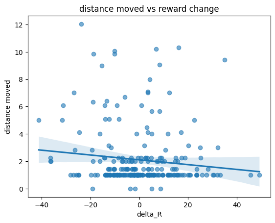
looks like this participant has low reward sensitivity:
as the reward gets better, they tend to travel greater
moving more based on uncertainty
Overall, it looks like it works, let’s turn it into a function.
def make_transition_df(pid, df=asd_df, grid_size=11):
sub = df[df["subjectID"] == pid].copy()
if sub.empty:
return pd.DataFrame() # returns empty if no subject
# sort block and trials for subject
sub = sub.sort_values(["block_nr", "trial_nr"]).reset_index(drop=True)
# current tile, next tile, current reward, prev reward
sub["A_t"] = sub["selected_choice"]
sub["A_t+1"] = sub["selected_choice"].shift(-1)
sub["R_t"] = sub["reward"]
sub["R_t-1"] = sub["reward"].shift(1)
# distance traveled for subject
sub["Dist_a"] = [dist_tiles(a, b) for a, b in zip(sub["A_t"], sub["A_t+1"])]
# reward change or difference
sub["Delta_R"] = sub["R_t"] - sub["R_t-1"]
# putting it all together
output = sub[[
"trial_nr", "A_t", "A_t+1", "Dist_a",
"R_t", "R_t-1", "Delta_R", "block_nr", "aq_tot", "aq_tot_bin", "group"
]].rename(columns={"trial_nr": "trial", "block_nr": "Round"})
output.insert(0, "subjectID", pid)
# Drop rows that are empty
output = output.dropna().reset_index(drop=True)
return output# testing
random_participant = make_transition_df("6mtzhvrqrcs3rq3vhhrr5c43", asd_df)
random_participant| subjectID | trial | A_t | A_t+1 | Dist_a | R_t | R_t-1 | Delta_R | Round | aq_tot | aq_tot_bin | group | |
|---|---|---|---|---|---|---|---|---|---|---|---|---|
| 0 | 6mtzhvrqrcs3rq3vhhrr5c43 | 1 | 107 | 96.0 | 1.000000 | 33.996040 | 37.992839 | -3.996799 | 0 | 83.0 | 10.0 | control |
| 1 | 6mtzhvrqrcs3rq3vhhrr5c43 | 2 | 96 | 97.0 | 1.000000 | 31.274705 | 33.996040 | -2.721335 | 0 | 83.0 | 10.0 | control |
| 2 | 6mtzhvrqrcs3rq3vhhrr5c43 | 3 | 97 | 109.0 | 1.414214 | 31.883151 | 31.274705 | 0.608445 | 0 | 83.0 | 10.0 | control |
| 3 | 6mtzhvrqrcs3rq3vhhrr5c43 | 4 | 109 | 84.0 | 3.605551 | 35.821491 | 31.883151 | 3.938341 | 0 | 83.0 | 10.0 | control |
| 4 | 6mtzhvrqrcs3rq3vhhrr5c43 | 5 | 84 | 72.0 | 1.414214 | 32.924410 | 35.821491 | -2.897081 | 0 | 83.0 | 10.0 | control |
| ... | ... | ... | ... | ... | ... | ... | ... | ... | ... | ... | ... | ... |
| 243 | 6mtzhvrqrcs3rq3vhhrr5c43 | 19 | 29 | 50.0 | 2.236068 | 64.848428 | 73.075206 | -8.226778 | 9 | 83.0 | 10.0 | control |
| 244 | 6mtzhvrqrcs3rq3vhhrr5c43 | 20 | 50 | 39.0 | 1.000000 | 55.153846 | 64.848428 | -9.694582 | 9 | 83.0 | 10.0 | control |
| 245 | 6mtzhvrqrcs3rq3vhhrr5c43 | 21 | 39 | 30.0 | 2.236068 | 62.803955 | 55.153846 | 7.650109 | 9 | 83.0 | 10.0 | control |
| 246 | 6mtzhvrqrcs3rq3vhhrr5c43 | 22 | 30 | 31.0 | 1.000000 | 60.796030 | 62.803955 | -2.007925 | 9 | 83.0 | 10.0 | control |
| 247 | 6mtzhvrqrcs3rq3vhhrr5c43 | 23 | 31 | 28.0 | 3.000000 | 47.229330 | 60.796030 | -13.566699 | 9 | 83.0 | 10.0 | control |
248 rows × 12 columns
It works!
# Let's try it on a control participant
# Need to split based on control and autism
autism_df = asd_df[asd_df["group"] == "autism"]
control_df = asd_df[asd_df["group"] == "control"]
print("Autism subjects:", autism_df["subjectID"].nunique())
print("Control subjects:", control_df["subjectID"].nunique())Autism subjects: 77
Control subjects: 511autism_df.head(5)| Unnamed: 0_x | X | subjectID | block_nr | trial_nr | grid | initial_opened | selected_choice | reward | average_reward | ... | asrs_tot | sds_tot | paq_tot | cati_tot | Unnamed: 0 | group | prolific_study | ICAR_total | age | gender | |
|---|---|---|---|---|---|---|---|---|---|---|---|---|---|---|---|---|---|---|---|---|---|
| 9500 | 9501 | 12001 | twtzmvq9639ts49wll9c65hq | 0 | 0 | 31 | 12 | 13 | 58.286300 | 54.50 | ... | 47.0 | 63.0 | 41.0 | 207.0 | 340 | autism | wave1 | 13.0 | 27.0 | Female |
| 9501 | 9502 | 12002 | twtzmvq9639ts49wll9c65hq | 0 | 1 | 31 | 12 | 24 | 38.269079 | 49.00 | ... | 47.0 | 63.0 | 41.0 | 207.0 | 340 | autism | wave1 | 13.0 | 27.0 | Female |
| 9502 | 9503 | 12003 | twtzmvq9639ts49wll9c65hq | 0 | 2 | 31 | 12 | 2 | 69.875757 | 54.25 | ... | 47.0 | 63.0 | 41.0 | 207.0 | 340 | autism | wave1 | 13.0 | 27.0 | Female |
| 9503 | 9504 | 12004 | twtzmvq9639ts49wll9c65hq | 0 | 3 | 31 | 12 | 1 | 66.020061 | 56.60 | ... | 47.0 | 63.0 | 41.0 | 207.0 | 340 | autism | wave1 | 13.0 | 27.0 | Female |
| 9504 | 9505 | 12005 | twtzmvq9639ts49wll9c65hq | 0 | 4 | 31 | 12 | 0 | 58.903365 | 57.00 | ... | 47.0 | 63.0 | 41.0 | 207.0 | 340 | autism | wave1 | 13.0 | 27.0 | Female |
5 rows × 27 columns
control_df.head(5)| Unnamed: 0_x | X | subjectID | block_nr | trial_nr | grid | initial_opened | selected_choice | reward | average_reward | ... | asrs_tot | sds_tot | paq_tot | cati_tot | Unnamed: 0 | group | prolific_study | ICAR_total | age | gender | |
|---|---|---|---|---|---|---|---|---|---|---|---|---|---|---|---|---|---|---|---|---|---|
| 0 | 1 | 1001 | 44r44zmrtvl59ml3llcql4w4 | 0 | 0 | 51 | 111 | 101 | 56.861885 | 65.500000 | ... | 37.0 | 35.0 | 101.0 | 116.0 | 91 | control | pilot | 5.0 | 28.0 | Female |
| 1 | 2 | 1002 | 44r44zmrtvl59ml3llcql4w4 | 0 | 1 | 51 | 111 | 110 | 82.133990 | 71.000000 | ... | 37.0 | 35.0 | 101.0 | 116.0 | 91 | control | pilot | 5.0 | 28.0 | Female |
| 2 | 3 | 1003 | 44r44zmrtvl59ml3llcql4w4 | 0 | 2 | 51 | 111 | 101 | 57.101132 | 67.500000 | ... | 37.0 | 35.0 | 101.0 | 116.0 | 91 | control | pilot | 5.0 | 28.0 | Female |
| 3 | 4 | 1004 | 44r44zmrtvl59ml3llcql4w4 | 0 | 3 | 51 | 111 | 100 | 61.086212 | 66.200000 | ... | 37.0 | 35.0 | 101.0 | 116.0 | 91 | control | pilot | 5.0 | 28.0 | Female |
| 4 | 5 | 1005 | 44r44zmrtvl59ml3llcql4w4 | 0 | 4 | 51 | 111 | 99 | 70.195297 | 66.833333 | ... | 37.0 | 35.0 | 101.0 | 116.0 | 91 | control | pilot | 5.0 | 28.0 | Female |
5 rows × 27 columns
autism_part = make_transition_df("twtzmvq9639ts49wll9c65hq", autism_df)
autism_part| subjectID | trial | A_t | A_t+1 | Dist_a | R_t | R_t-1 | Delta_R | Round | aq_tot | aq_tot_bin | group | |
|---|---|---|---|---|---|---|---|---|---|---|---|---|
| 0 | twtzmvq9639ts49wll9c65hq | 1 | 24 | 2.0 | 2.0 | 38.269079 | 58.286300 | -20.017221 | 0 | 176.0 | 44.0 | autism |
| 1 | twtzmvq9639ts49wll9c65hq | 2 | 2 | 1.0 | 1.0 | 69.875757 | 38.269079 | 31.606678 | 0 | 176.0 | 44.0 | autism |
| 2 | twtzmvq9639ts49wll9c65hq | 3 | 1 | 0.0 | 1.0 | 66.020061 | 69.875757 | -3.855695 | 0 | 176.0 | 44.0 | autism |
| 3 | twtzmvq9639ts49wll9c65hq | 4 | 0 | 3.0 | 3.0 | 58.903365 | 66.020061 | -7.116697 | 0 | 176.0 | 44.0 | autism |
| 4 | twtzmvq9639ts49wll9c65hq | 5 | 3 | 4.0 | 1.0 | 65.541003 | 58.903365 | 6.637639 | 0 | 176.0 | 44.0 | autism |
| ... | ... | ... | ... | ... | ... | ... | ... | ... | ... | ... | ... | ... |
| 243 | twtzmvq9639ts49wll9c65hq | 19 | 78 | 78.0 | 0.0 | 78.013380 | 76.262805 | 1.750575 | 9 | 176.0 | 44.0 | autism |
| 244 | twtzmvq9639ts49wll9c65hq | 20 | 78 | 78.0 | 0.0 | 75.848780 | 78.013380 | -2.164600 | 9 | 176.0 | 44.0 | autism |
| 245 | twtzmvq9639ts49wll9c65hq | 21 | 78 | 78.0 | 0.0 | 77.024325 | 75.848780 | 1.175545 | 9 | 176.0 | 44.0 | autism |
| 246 | twtzmvq9639ts49wll9c65hq | 22 | 78 | 78.0 | 0.0 | 77.324110 | 77.024325 | 0.299785 | 9 | 176.0 | 44.0 | autism |
| 247 | twtzmvq9639ts49wll9c65hq | 23 | 78 | 78.0 | 0.0 | 76.764292 | 77.324110 | -0.559817 | 9 | 176.0 | 44.0 | autism |
248 rows × 12 columns
control_part = make_transition_df("44r44zmrtvl59ml3llcql4w4", control_df)
control_part| subjectID | trial | A_t | A_t+1 | Dist_a | R_t | R_t-1 | Delta_R | Round | aq_tot | aq_tot_bin | group | |
|---|---|---|---|---|---|---|---|---|---|---|---|---|
| 0 | 44r44zmrtvl59ml3llcql4w4 | 1 | 110 | 101.0 | 2.236068 | 82.133990 | 56.861885 | 25.272105 | 0 | 103.0 | 16.0 | control |
| 1 | 44r44zmrtvl59ml3llcql4w4 | 2 | 101 | 100.0 | 1.000000 | 57.101132 | 82.133990 | -25.032858 | 0 | 103.0 | 16.0 | control |
| 2 | 44r44zmrtvl59ml3llcql4w4 | 3 | 100 | 99.0 | 1.000000 | 61.086212 | 57.101132 | 3.985080 | 0 | 103.0 | 16.0 | control |
| 3 | 44r44zmrtvl59ml3llcql4w4 | 4 | 99 | 112.0 | 2.236068 | 70.195297 | 61.086212 | 9.109085 | 0 | 103.0 | 16.0 | control |
| 4 | 44r44zmrtvl59ml3llcql4w4 | 5 | 112 | 113.0 | 1.000000 | 69.173351 | 70.195297 | -1.021947 | 0 | 103.0 | 16.0 | control |
| ... | ... | ... | ... | ... | ... | ... | ... | ... | ... | ... | ... | ... |
| 243 | 44r44zmrtvl59ml3llcql4w4 | 19 | 13 | 24.0 | 1.000000 | 32.698821 | 42.473793 | -9.774972 | 9 | 103.0 | 16.0 | control |
| 244 | 44r44zmrtvl59ml3llcql4w4 | 20 | 24 | 36.0 | 1.414214 | 40.021377 | 32.698821 | 7.322555 | 9 | 103.0 | 16.0 | control |
| 245 | 44r44zmrtvl59ml3llcql4w4 | 21 | 36 | 37.0 | 1.000000 | 46.221616 | 40.021377 | 6.200239 | 9 | 103.0 | 16.0 | control |
| 246 | 44r44zmrtvl59ml3llcql4w4 | 22 | 37 | 47.0 | 1.414214 | 41.592283 | 46.221616 | -4.629333 | 9 | 103.0 | 16.0 | control |
| 247 | 44r44zmrtvl59ml3llcql4w4 | 23 | 47 | 60.0 | 2.236068 | 27.342691 | 41.592283 | -14.249591 | 9 | 103.0 | 16.0 | control |
248 rows × 12 columns
plt.figure()
sns.regplot(data=autism_part, x="Delta_R", y="Dist_a", scatter_kws={"alpha":0.6})
plt.xlabel("delta_R")
plt.ylabel("distance moved")
plt.title("distance moved vs reward change - ASD subject")
plt.show()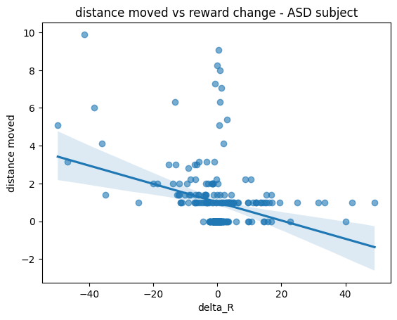
plt.figure()
sns.regplot(data=control_part, x="Delta_R", y="Dist_a", scatter_kws={"alpha":0.6})
plt.xlabel("delta_R")
plt.ylabel("distance moved")
plt.title("distance moved vs reward change - healthy subject")
plt.show()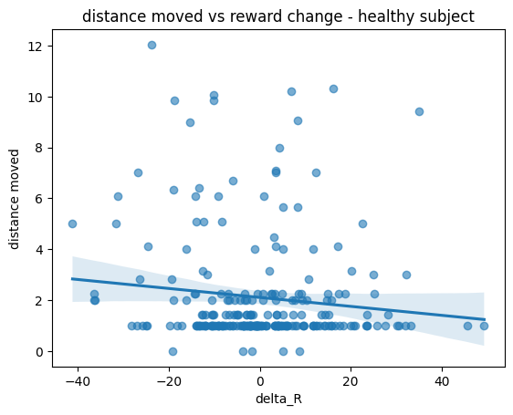
This is interesting, we see that a participant with ASD tends to explore less novel choices given their reward differences.
In contrast, a healthy participant explores more, being more sensitive to reward aflucutations, with their choices spreading beyond their previous decisions.
Maybe we can look at a Low AQ vs High AQ participant?
lowest_row = asd_df.loc[asd_df["aq_tot"].idxmin()]
lowest_id = lowest_row["subjectID"]
print(lowest_id, lowest_row["aq_tot"])
highest_row = asd_df.loc[asd_df["aq_tot"].idxmax()]
highest_id = highest_row["subjectID"]
print(highest_id, highest_row["aq_tot"])4qr5vs46wz6lqz4vmsl6wc3r 69.0
hmt5r5q6r4q464zctmc4chm4 184.0low_aq = make_transition_df("4qr5vs46wz6lqz4vmsl6wc3r", asd_df)
high_aq = make_transition_df("hmt5r5q6r4q464zctmc4chm4", asd_df)
low_aq.head(5)| subjectID | trial | A_t | A_t+1 | Dist_a | R_t | R_t-1 | Delta_R | Round | aq_tot | aq_tot_bin | group | |
|---|---|---|---|---|---|---|---|---|---|---|---|---|
| 0 | 4qr5vs46wz6lqz4vmsl6wc3r | 1 | 13 | 2.0 | 1.0 | 25.027440 | 7.397990 | 17.629450 | 0 | 69.0 | 2.0 | control |
| 1 | 4qr5vs46wz6lqz4vmsl6wc3r | 2 | 2 | 3.0 | 1.0 | 41.054155 | 25.027440 | 16.026715 | 0 | 69.0 | 2.0 | control |
| 2 | 4qr5vs46wz6lqz4vmsl6wc3r | 3 | 3 | 4.0 | 1.0 | 45.823596 | 41.054155 | 4.769441 | 0 | 69.0 | 2.0 | control |
| 3 | 4qr5vs46wz6lqz4vmsl6wc3r | 4 | 4 | 5.0 | 1.0 | 50.940318 | 45.823596 | 5.116722 | 0 | 69.0 | 2.0 | control |
| 4 | 4qr5vs46wz6lqz4vmsl6wc3r | 5 | 5 | 6.0 | 1.0 | 56.309404 | 50.940318 | 5.369085 | 0 | 69.0 | 2.0 | control |
high_aq.head(5)| subjectID | trial | A_t | A_t+1 | Dist_a | R_t | R_t-1 | Delta_R | Round | aq_tot | aq_tot_bin | group | |
|---|---|---|---|---|---|---|---|---|---|---|---|---|
| 0 | hmt5r5q6r4q464zctmc4chm4 | 1 | 24 | 36.0 | 1.414214 | 41.563417 | 39.535232 | 2.028185 | 0 | 184.0 | 47.0 | autism |
| 1 | hmt5r5q6r4q464zctmc4chm4 | 2 | 36 | 22.0 | 3.162278 | 27.160129 | 41.563417 | -14.403287 | 0 | 184.0 | 47.0 | autism |
| 2 | hmt5r5q6r4q464zctmc4chm4 | 3 | 22 | 23.0 | 1.000000 | 41.227361 | 27.160129 | 14.067231 | 0 | 184.0 | 47.0 | autism |
| 3 | hmt5r5q6r4q464zctmc4chm4 | 4 | 23 | 12.0 | 1.000000 | 45.868311 | 41.227361 | 4.640950 | 0 | 184.0 | 47.0 | autism |
| 4 | hmt5r5q6r4q464zctmc4chm4 | 5 | 12 | 1.0 | 1.000000 | 56.287826 | 45.868311 | 10.419516 | 0 | 184.0 | 47.0 | autism |
plt.figure()
sns.regplot(data=low_aq, x="Delta_R", y="Dist_a", scatter_kws={"alpha":0.6})
plt.xlabel("delta_R")
plt.ylabel("distance moved")
plt.title("distance moved vs reward change - Lowest AQ")
plt.show()
plt.figure()
sns.regplot(data=high_aq, x="Delta_R", y="Dist_a", scatter_kws={"alpha":0.6})
plt.xlabel("delta_R")
plt.ylabel("distance moved")
plt.title("distance moved vs reward change - Highest AQ")
plt.show()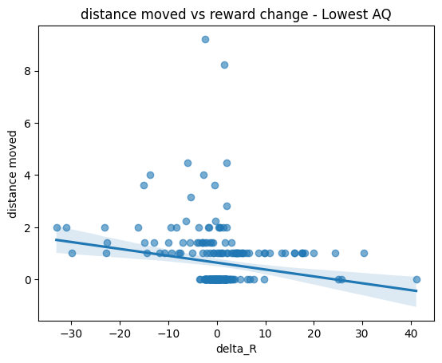
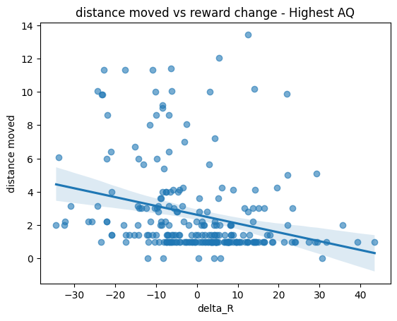
Doesn’t seem to substantially diff compared to our first 2 participants.
We’ll need more information, and better visualization. Lines aren’t capture the trend as well.
autism_part| subjectID | trial | A_t | A_t+1 | Dist_a | R_t | R_t-1 | Delta_R | Round | aq_tot | aq_tot_bin | group | |
|---|---|---|---|---|---|---|---|---|---|---|---|---|
| 0 | twtzmvq9639ts49wll9c65hq | 1 | 24 | 2.0 | 2.0 | 38.269079 | 58.286300 | -20.017221 | 0 | 176.0 | 44.0 | autism |
| 1 | twtzmvq9639ts49wll9c65hq | 2 | 2 | 1.0 | 1.0 | 69.875757 | 38.269079 | 31.606678 | 0 | 176.0 | 44.0 | autism |
| 2 | twtzmvq9639ts49wll9c65hq | 3 | 1 | 0.0 | 1.0 | 66.020061 | 69.875757 | -3.855695 | 0 | 176.0 | 44.0 | autism |
| 3 | twtzmvq9639ts49wll9c65hq | 4 | 0 | 3.0 | 3.0 | 58.903365 | 66.020061 | -7.116697 | 0 | 176.0 | 44.0 | autism |
| 4 | twtzmvq9639ts49wll9c65hq | 5 | 3 | 4.0 | 1.0 | 65.541003 | 58.903365 | 6.637639 | 0 | 176.0 | 44.0 | autism |
| ... | ... | ... | ... | ... | ... | ... | ... | ... | ... | ... | ... | ... |
| 243 | twtzmvq9639ts49wll9c65hq | 19 | 78 | 78.0 | 0.0 | 78.013380 | 76.262805 | 1.750575 | 9 | 176.0 | 44.0 | autism |
| 244 | twtzmvq9639ts49wll9c65hq | 20 | 78 | 78.0 | 0.0 | 75.848780 | 78.013380 | -2.164600 | 9 | 176.0 | 44.0 | autism |
| 245 | twtzmvq9639ts49wll9c65hq | 21 | 78 | 78.0 | 0.0 | 77.024325 | 75.848780 | 1.175545 | 9 | 176.0 | 44.0 | autism |
| 246 | twtzmvq9639ts49wll9c65hq | 22 | 78 | 78.0 | 0.0 | 77.324110 | 77.024325 | 0.299785 | 9 | 176.0 | 44.0 | autism |
| 247 | twtzmvq9639ts49wll9c65hq | 23 | 78 | 78.0 | 0.0 | 76.764292 | 77.324110 | -0.559817 | 9 | 176.0 | 44.0 | autism |
248 rows × 12 columns
control_part| subjectID | trial | A_t | A_t+1 | Dist_a | R_t | R_t-1 | Delta_R | Round | aq_tot | aq_tot_bin | group | |
|---|---|---|---|---|---|---|---|---|---|---|---|---|
| 0 | 44r44zmrtvl59ml3llcql4w4 | 1 | 110 | 101.0 | 2.236068 | 82.133990 | 56.861885 | 25.272105 | 0 | 103.0 | 16.0 | control |
| 1 | 44r44zmrtvl59ml3llcql4w4 | 2 | 101 | 100.0 | 1.000000 | 57.101132 | 82.133990 | -25.032858 | 0 | 103.0 | 16.0 | control |
| 2 | 44r44zmrtvl59ml3llcql4w4 | 3 | 100 | 99.0 | 1.000000 | 61.086212 | 57.101132 | 3.985080 | 0 | 103.0 | 16.0 | control |
| 3 | 44r44zmrtvl59ml3llcql4w4 | 4 | 99 | 112.0 | 2.236068 | 70.195297 | 61.086212 | 9.109085 | 0 | 103.0 | 16.0 | control |
| 4 | 44r44zmrtvl59ml3llcql4w4 | 5 | 112 | 113.0 | 1.000000 | 69.173351 | 70.195297 | -1.021947 | 0 | 103.0 | 16.0 | control |
| ... | ... | ... | ... | ... | ... | ... | ... | ... | ... | ... | ... | ... |
| 243 | 44r44zmrtvl59ml3llcql4w4 | 19 | 13 | 24.0 | 1.000000 | 32.698821 | 42.473793 | -9.774972 | 9 | 103.0 | 16.0 | control |
| 244 | 44r44zmrtvl59ml3llcql4w4 | 20 | 24 | 36.0 | 1.414214 | 40.021377 | 32.698821 | 7.322555 | 9 | 103.0 | 16.0 | control |
| 245 | 44r44zmrtvl59ml3llcql4w4 | 21 | 36 | 37.0 | 1.000000 | 46.221616 | 40.021377 | 6.200239 | 9 | 103.0 | 16.0 | control |
| 246 | 44r44zmrtvl59ml3llcql4w4 | 22 | 37 | 47.0 | 1.414214 | 41.592283 | 46.221616 | -4.629333 | 9 | 103.0 | 16.0 | control |
| 247 | 44r44zmrtvl59ml3llcql4w4 | 23 | 47 | 60.0 | 2.236068 | 27.342691 | 41.592283 | -14.249591 | 9 | 103.0 | 16.0 | control |
248 rows × 12 columns
# let's split participants into quartiles based on AQ (4 blocks)
aq_df = asd_df[["subjectID", "aq_tot"]].drop_duplicates()
aq_df["AQ_quartile"] = pd.qcut(
aq_df["aq_tot"],
q=4,
labels=["Q1_low", "Q2_midlow", "Q3_midhigh", "Q4_high"]
)def quartile_participant_averages(asd_df, aq_df, quartile):
pids = aq_df.loc[aq_df["AQ_quartile"] == quartile, "subjectID"].dropna().unique()
rows = []
for pid in pids:
# Corrected function call: changed `transition_df` to `make_transition_df`
mat = make_transition_df(pid, asd_df) # Assuming asd_df is the default argument for df
if mat.empty:
continue
rows.append({
"subjectID": pid,
"mean_Dist_a": mat["Dist_a"].mean(),
"mean_Delta_R": mat["Delta_R"].mean(),
"n_transitions": len(mat)
})
per_participant_df = pd.DataFrame(rows)
if not per_participant_df.empty:
quartile_mean_dist = per_participant_df["mean_Dist_a"].mean()
quartile_mean_delta_r = per_participant_df["mean_Delta_R"].mean()
else:
quartile_mean_dist = np.nan # Or handle as appropriate for empty data
quartile_mean_delta_r = np.nan
return quartile_mean_dist, quartile_mean_delta_r, per_participant_dfq = "Q1_low" # lowest AQ quartile
mean_dist, mean_delta_r, per_participant_q1 = quartile_participant_averages(asd_df, aq_df, q)
print("Mean for ", q, "Dist_a: ", mean_dist)
print("Mean for ", q, "Delta_R: ", mean_delta_r)
per_participant_q1.head()Mean for Q1_low Dist_a: 1.7215725135794762
Mean for Q1_low Delta_R: 0.07043606365228443| subjectID | mean_Dist_a | mean_Delta_R | n_transitions | |
|---|---|---|---|---|
| 0 | 44r44zmrtvl59ml3llcql4w4 | 2.106032 | -0.119029 | 248 |
| 1 | sstr63rwvsmz36hmqs6hzzvs | 1.638066 | -0.057058 | 248 |
| 2 | 4qrwq53mslq4cr4vsrt6946c | 0.528045 | 0.062387 | 248 |
| 3 | 6mtzhvrqrcs3rq3vhhrr5c43 | 2.068538 | 0.037244 | 248 |
| 4 | 5ctz9lwc6rt9c64rztwr6rzm | 2.612953 | 0.015129 | 248 |
q = "Q2_midlow" # 2nd mid AQ quartile
mean_dist, mean_delta_r, per_participant_q2 = quartile_participant_averages(asd_df, aq_df, q)
print("Mean for ", q, "Dist_a: ", mean_dist)
print("Mean for ", q, "Delta_R: ", mean_delta_r)
per_participant_q2.head()Mean for Q2_midlow Dist_a: 1.7468894245092064
Mean for Q2_midlow Delta_R: 0.08237812129183361| subjectID | mean_Dist_a | mean_Delta_R | n_transitions | |
|---|---|---|---|---|
| 0 | tstr6t4hc5s3z6r4vmhz366q | 1.066238 | 0.095133 | 248 |
| 1 | w6t369hrcqztq4994tvhmmzr | 1.320679 | 0.060962 | 248 |
| 2 | 4rrm4tcchtl49z3w3z63h4v6 | 1.049200 | 0.174240 | 248 |
| 3 | 4tr9q9qmszw33vhmv33t54w4 | 1.702304 | 0.102110 | 248 |
| 4 | qht6z65mss65t4rmq9llszth | 1.135600 | 0.239391 | 248 |
q = "Q3_midhigh" # 3rd mid AQ quartile
mean_dist, mean_delta_r, per_participant_q3 = quartile_participant_averages(asd_df, aq_df, q)
print("Mean for ", q, "Dist_a: ", mean_dist)
print("Mean for ", q, "Delta_R: ", mean_delta_r)
per_participant_q3.head()Mean for Q3_midhigh Dist_a: 1.7353695370154367
Mean for Q3_midhigh Delta_R: 0.07674988381831496| subjectID | mean_Dist_a | mean_Delta_R | n_transitions | |
|---|---|---|---|---|
| 0 | 43rzq63t93hsl5ccc9369s5z | 1.414735 | 0.012753 | 248 |
| 1 | 4zr94h9h9369rmm6h6lq349v | 1.062684 | 0.028549 | 248 |
| 2 | mvtr3v5q95zl6qlv4ws93tcs | 2.120095 | 0.093653 | 248 |
| 3 | lzrhwclcm4mlvc9lmvlwswht | 2.471856 | -0.112729 | 248 |
| 4 | 4wrz49rt3wv4qvm36r5q649z | 2.213868 | 0.183346 | 248 |
q = "Q4_high" # highest AQ quartile
mean_dist, mean_delta_r, per_participant_q4 = quartile_participant_averages(asd_df, aq_df, q)
print("Mean for ", q, "Dist_a: ", mean_dist)
print("Mean for ", q, "Delta_R: ", mean_delta_r)
per_participant_q4.head()Mean for Q4_high Dist_a: 1.6757017963440806
Mean for Q4_high Delta_R: 0.08257387217208| subjectID | mean_Dist_a | mean_Delta_R | n_transitions | |
|---|---|---|---|---|
| 0 | 4ztz9cwlhttm9qqh4tmvwc5h | 2.080124 | 0.009946 | 248 |
| 1 | 4sr34wwcvzvr33l9t4vq64l4 | 1.931782 | -0.024973 | 248 |
| 2 | qzr5q3z6vsvwl5m9z34zz3hw | 1.929556 | 0.039953 | 248 |
| 3 | 45r94sc4rsvlt3hhqs4q345m | 0.357124 | 0.100279 | 248 |
| 4 | twtzmvq9639ts49wll9c65hq | 1.005593 | 0.074508 | 248 |
Seems in line with what we expect, though the differences aren’t significant enough.
But, maybe we can better visualize this with a different plot to better capture a participant’s movement.
def binned_curve_fast(x, y, bin_edges, min_bin_n=1):
"""
Fast equal-width bin means using numpy only.
Parameters
----------
x, y : 1D arrays
bin_edges : 1D array of length (n_bins+1)
min_bin_n : int, bins with fewer points are dropped
Returns
-------
centers : 1D array of bin centers (kept bins only)
mean_y : 1D array of mean y per kept bin
counts : 1D array of counts per kept bin
"""
x = np.asarray(x)
y = np.asarray(y)
# keep finite pairs only
m = np.isfinite(x) & np.isfinite(y)
x = x[m]
y = y[m]
n_bins = len(bin_edges) - 1
if len(x) == 0 or n_bins <= 0:
return np.array([]), np.array([]), np.array([])
# assign each x to a bin index in [0, n_bins-1]
# digitize returns 1..n_bins (and 0 / n_bins+1 for out of range)
idx = np.digitize(x, bin_edges) - 1
in_range = (idx >= 0) & (idx < n_bins)
idx = idx[in_range]
y = y[in_range]
# compute sums and counts per bin
counts = np.bincount(idx, minlength=n_bins)
sums = np.bincount(idx, weights=y, minlength=n_bins)
# means (avoid divide-by-zero)
means = np.divide(sums, counts, out=np.full(n_bins, np.nan), where=counts > 0)
# bin centers
centers = (bin_edges[:-1] + bin_edges[1:]) / 2
# apply min_bin_n filter
keep = counts >= min_bin_n
return centers[keep], means[keep], counts[keep]def plot_binned_single_participant_fast(
df_sub,
x_col="Delta_R",
y_col="Dist_a",
bin_edges=None,
n_bins=15,
x_range=None,
min_bin_n=1,
show_scatter=True,
scatter_alpha=0.25,
scatter_size=25,
line_width=3,
point_size=90,
title=None,
):
"""
Plot binned curve for a single participant. Optionally overlays scatter.
Runtime-optimized (numpy binning).
"""
x = df_sub[x_col].to_numpy()
y = df_sub[y_col].to_numpy()
# choose tail-preserving bin edges
if bin_edges is None:
if x_range is None:
xmin = np.nanmin(x)
xmax = np.nanmax(x)
else:
xmin, xmax = x_range
if not np.isfinite(xmin) or not np.isfinite(xmax) or xmin == xmax:
xmin, xmax = -1, 1
bin_edges = np.linspace(xmin, xmax, n_bins + 1)
else:
bin_edges = np.asarray(bin_edges, dtype=float)
centers, mean_y, counts = binned_curve_fast(x, y, bin_edges, min_bin_n=min_bin_n)
plt.figure(figsize=(7, 5))
if show_scatter:
plt.scatter(x, y, alpha=scatter_alpha, s=scatter_size)
plt.plot(centers, mean_y, linewidth=line_width)
plt.scatter(centers, mean_y, s=point_size, zorder=3)
plt.xlabel(x_col)
plt.ylabel(y_col)
plt.ylim(0, 15)
if title is not None:
plt.title(title)
plt.show()pid = "44r44zmrtvl59ml3llcql4w4"
mat = make_transition_df(pid, df=control_df)
individual_edges = np.linspace(-50, 50, 16)
out = plot_binned_single_participant_fast(
mat,
x_col="Delta_R",
y_col="Dist_a",
bin_edges=individual_edges, # consistent across people/groups
min_bin_n=1, # keep tails even if sparse
show_scatter=True,
title=f"Participant {pid}: binned movement curve"
)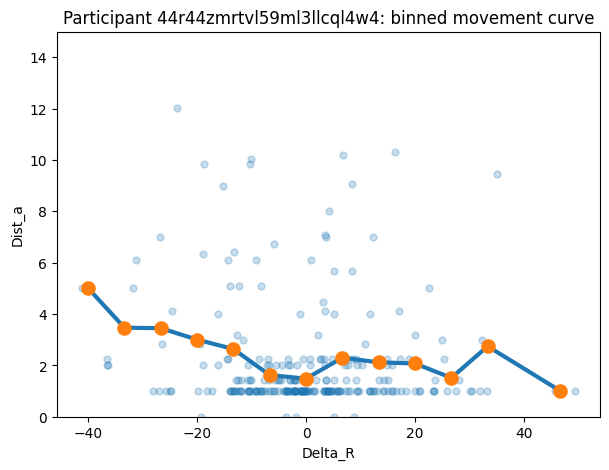
autism_ids = autism_df["subjectID"].unique().tolist()
autism_ids[:5]['twtzmvq9639ts49wll9c65hq',
'qrrzt3mq4ztmmztzszmqsm4s',
'5stvthw4vthstq635l6ww4w9',
'chtqwhc4shqmc49ztq9lsthv',
'6sr9zq3clcw4rzlt5m4wqcc6']control_ids = control_df["subjectID"].unique().tolist()
control_ids[:5]['44r44zmrtvl59ml3llcql4w4',
'sstr63rwvsmz36hmqs6hzzvs',
'4qrwq53mslq4cr4vsrt6946c',
'43rzq63t93hsl5ccc9369s5z',
'6mtzhvrqrcs3rq3vhhrr5c43']dia1 = make_transition_df("twtzmvq9639ts49wll9c65hq", df=autism_df)
plot_binned_single_participant_fast(
dia1,
bin_edges=individual_edges,
title=f"Participant - Diagnosed #1"
)
dia2 = make_transition_df("qrrzt3mq4ztmmztzszmqsm4s", df=autism_df)
plot_binned_single_participant_fast(
dia2,
bin_edges=individual_edges,
title=f"Participant - Diagnosed #2"
)
dia3 = make_transition_df("5stvthw4vthstq635l6ww4w9", df=autism_df)
plot_binned_single_participant_fast(
dia3,
bin_edges=individual_edges,
title=f"Participant - Diagnosed #3"
)
dia4 = make_transition_df("chtqwhc4shqmc49ztq9lsthv", df=autism_df)
plot_binned_single_participant_fast(
dia4,
bin_edges=individual_edges,
title=f"Participant - Diagnosed #4"
)
dia5 = make_transition_df("6sr9zq3clcw4rzlt5m4wqcc6", df=autism_df)
plot_binned_single_participant_fast(
dia5,
bin_edges=individual_edges,
title=f"Participant - Diagnosed #5"
)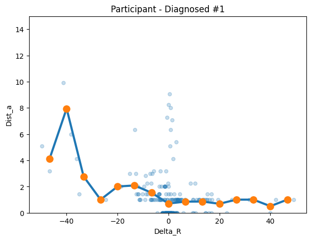
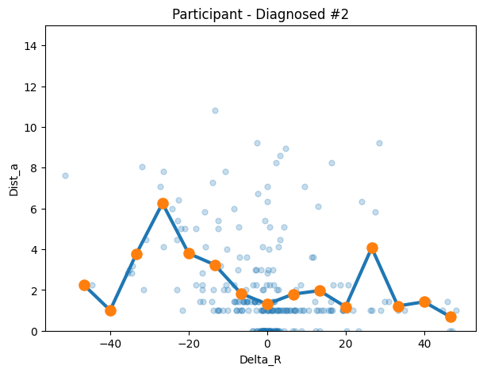
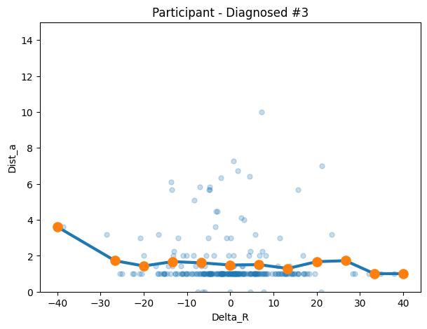
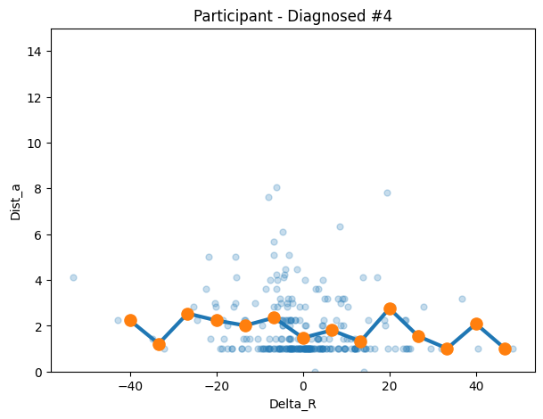
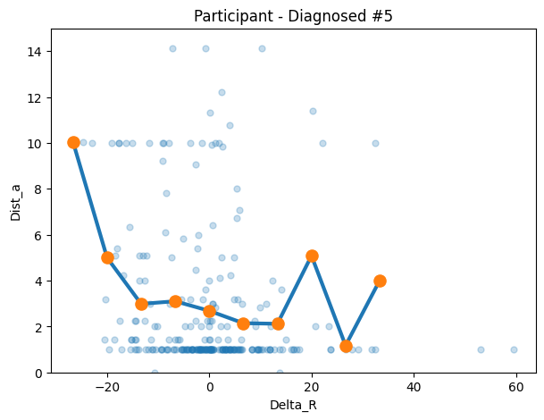
# ['44r44zmrtvl59ml3llcql4w4',
# 'sstr63rwvsmz36hmqs6hzzvs',
# '4qrwq53mslq4cr4vsrt6946c',
# '43rzq63t93hsl5ccc9369s5z',
# '6mtzhvrqrcs3rq3vhhrr5c43']
con1 = make_transition_df("44r44zmrtvl59ml3llcql4w4", df=control_df)
plot_binned_single_participant_fast(
con1,
bin_edges=individual_edges,
title=f"Participant - Control #1"
)
con2 = make_transition_df("sstr63rwvsmz36hmqs6hzzvs", df=control_df)
plot_binned_single_participant_fast(
con2,
bin_edges=individual_edges,
title=f"Participant - Control #2"
)
con3 = make_transition_df("4qrwq53mslq4cr4vsrt6946c", df=control_df)
plot_binned_single_participant_fast(
con3,
bin_edges=individual_edges,
title=f"Participant - Control #3"
)
con4 = make_transition_df("43rzq63t93hsl5ccc9369s5z", df=control_df)
plot_binned_single_participant_fast(
con4,
bin_edges=individual_edges,
title=f"Participant - Control #4"
)
con5 = make_transition_df("6mtzhvrqrcs3rq3vhhrr5c43", df=control_df)
plot_binned_single_participant_fast(
con5,
bin_edges=individual_edges,
title=f"Participant - Control #5"
)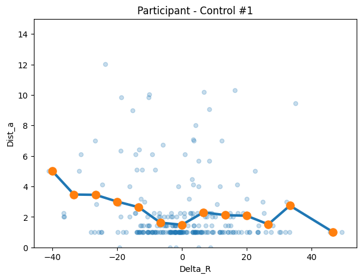
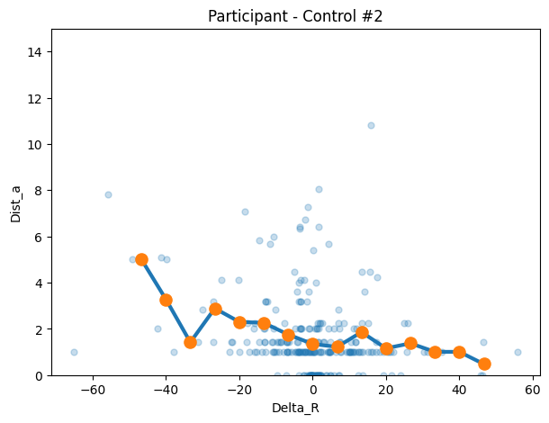
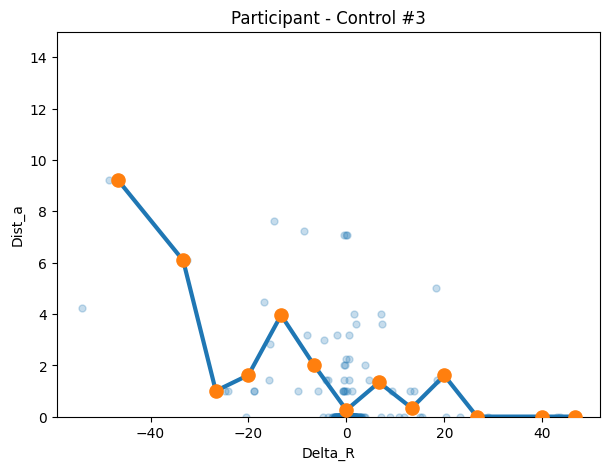
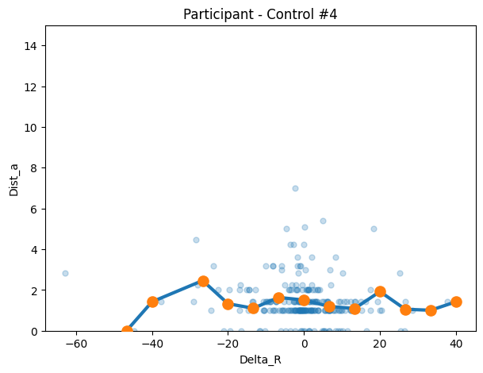
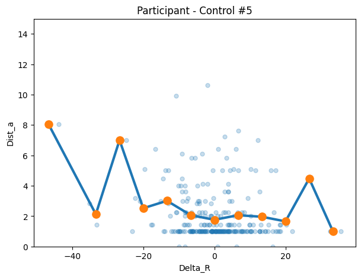
def participant_binned_means_fast(x, y, bin_edges, min_bin_n=1):
"""
Returns per-bin mean y for ONE participant (length = n_bins), with NaN for bins
that don't meet min_bin_n.
"""
x = np.asarray(x)
y = np.asarray(y)
m = np.isfinite(x) & np.isfinite(y)
x = x[m]
y = y[m]
n_bins = len(bin_edges) - 1
if len(x) == 0:
return np.full(n_bins, np.nan), np.zeros(n_bins, dtype=int)
idx = np.digitize(x, bin_edges) - 1
in_range = (idx >= 0) & (idx < n_bins)
idx = idx[in_range]
y = y[in_range]
counts = np.bincount(idx, minlength=n_bins)
sums = np.bincount(idx, weights=y, minlength=n_bins)
means = np.full(n_bins, np.nan)
ok = counts >= min_bin_n
means[ok] = sums[ok] / counts[ok]
return means, countsdef group_binned_curve_fast(df_group, subject_col="subjectID",
x_col="Delta_R", y_col="Dist_a",
bin_edges=None, n_bins=15, x_range=None,
min_bin_n=1):
if bin_edges is None:
if x_range is None:
xmin = df_group[x_col].min()
xmax = df_group[x_col].max()
else:
xmin, xmax = x_range
bin_edges = np.linspace(xmin, xmax, n_bins + 1)
else:
bin_edges = np.asarray(bin_edges, dtype=float)
n_bins = len(bin_edges) - 1
centers = (bin_edges[:-1] + bin_edges[1:]) / 2
curves = []
for sid, sub in df_group.groupby(subject_col, sort=False):
means, _ = participant_binned_means_fast(
sub[x_col].to_numpy(),
sub[y_col].to_numpy(),
bin_edges,
min_bin_n=min_bin_n
)
curves.append(means)
curves = np.asarray(curves)
group_mean = np.nanmean(curves, axis=0)
n_subjects_per_bin = np.sum(np.isfinite(curves), axis=0)
return centers, group_mean, n_subjects_per_bin, bin_edgesdef plot_group_overlay_binned(
autism_df, control_df,
subject_col="subjectID",
x_col="Delta_R", y_col="Dist_a",
bin_edges=None, n_bins=15, x_range=None,
min_bin_n=3,
y_range=None,
title="Group binned movement curves (Autism vs Control)"
):
# Ensure BOTH groups use identical bin edges
if bin_edges is None:
if x_range is None:
xmin = min(autism_df[x_col].min(), control_df[x_col].min())
xmax = max(autism_df[x_col].max(), control_df[x_col].max())
else:
xmin, xmax = x_range
bin_edges = np.linspace(xmin, xmax, n_bins + 1)
# Compute curves
xa, ya, na, _ = group_binned_curve_fast(
autism_df, subject_col, x_col, y_col,
bin_edges=bin_edges, min_bin_n=min_bin_n
)
xc, yc, nc, _ = group_binned_curve_fast(
control_df, subject_col, x_col, y_col,
bin_edges=bin_edges, min_bin_n=min_bin_n
)
# Plot
plt.figure(figsize=(8, 6))
plt.plot(xa, ya, linewidth=3, label=f"Autism (subjects/bin avg)")
plt.plot(xc, yc, linewidth=3, label=f"Control (subjects/bin avg)")
plt.xlabel(x_col)
plt.ylabel(y_col)
plt.title(title)
plt.legend()
if y_range is not None:
plt.ylim(y_range)
plt.show()
return {
"centers": xa,
"autism_mean": ya,
"control_mean": yc,
"autism_n_subjects_per_bin": na,
"control_n_subjects_per_bin": nc,
"bin_edges": bin_edges
}global_y_range = (-2, 8)
GLOBAL_EDGES = np.linspace(-50, 50, 16)
# Create transition dataframes for all participants in each group
autism_transition_list = []
for pid in autism_df["subjectID"].unique():
transition_data = make_transition_df(pid, df=autism_df)
if not transition_data.empty:
autism_transition_list.append(transition_data)
autism_transition_all_df = pd.concat(autism_transition_list) if autism_transition_list else pd.DataFrame()
control_transition_list = []
for pid in control_df["subjectID"].unique():
transition_data = make_transition_df(pid, df=control_df)
if not transition_data.empty:
control_transition_list.append(transition_data)
control_transition_all_df = pd.concat(control_transition_list) if control_transition_list else pd.DataFrame()
out = plot_group_overlay_binned(
autism_df=autism_transition_all_df,
control_df=control_transition_all_df,
subject_col="subjectID",
x_col="Delta_R",
y_col="Dist_a",
bin_edges=GLOBAL_EDGES,
min_bin_n=3, # keeps tails
y_range=global_y_range
)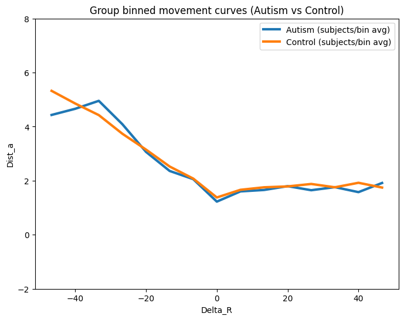
def build_participant_bin_matrix(
transition_all_df, # combined transition df (from all pids)
bin_edges=GLOBAL_EDGES,
subject_col="subjectID",
x_col="Delta_R",
y_col="Dist_a",
min_bin_n=1
):
"""
Builds a (n_participants x n_bins) matrix of per-bin y-averages.
Rows = one participant
Columns = mean Dist_a for each Delta_R bin
NaN = participant had no data in that bin (below min_bin_n)
"""
bin_edges = np.asarray(bin_edges, dtype=float)
n_bins = len(bin_edges) - 1
centers = (bin_edges[:-1] + bin_edges[1:]) / 2
# Column labels: bin center values rounded for readability
col_labels = [f"bin_{c:.1f}" for c in centers]
rows = {}
for pid, sub in transition_all_df.groupby(subject_col, sort=False):
means, _ = participant_binned_means_fast(
sub[x_col].to_numpy(),
sub[y_col].to_numpy(),
bin_edges,
min_bin_n=min_bin_n
)
rows[pid] = means
matrix_df = pd.DataFrame.from_dict(rows, orient="index", columns=col_labels)
matrix_df.index.name = subject_col
return matrix_df# Build matrix for autism group
autism_bin_matrix = build_participant_bin_matrix(
autism_transition_all_df,
bin_edges=GLOBAL_EDGES,
min_bin_n=1
)
# Build matrix for control group
control_bin_matrix = build_participant_bin_matrix(
control_transition_all_df,
bin_edges=GLOBAL_EDGES,
min_bin_n=1
)
print("Autism matrix shape:", autism_bin_matrix.shape) # (n_autism_pids, 15)
print("Control matrix shape:", control_bin_matrix.shape) # (n_control_pids, 15)
autism_bin_matrix.head()Autism matrix shape: (77, 15)
Control matrix shape: (511, 15)| bin_-46.7 | bin_-40.0 | bin_-33.3 | bin_-26.7 | bin_-20.0 | bin_-13.3 | bin_-6.7 | bin_0.0 | bin_6.7 | bin_13.3 | bin_20.0 | bin_26.7 | bin_33.3 | bin_40.0 | bin_46.7 | |
|---|---|---|---|---|---|---|---|---|---|---|---|---|---|---|---|
| subjectID | |||||||||||||||
| twtzmvq9639ts49wll9c65hq | 4.130649 | 7.949747 | 2.768660 | 1.000000 | 2.000000 | 2.081784 | 1.523819 | 0.703370 | 0.847740 | 0.853143 | 0.682843 | 1.000000 | 1.000000 | 0.500000 | 1.000000 |
| qrrzt3mq4ztmmztzszmqsm4s | 2.236068 | 1.000000 | 3.764789 | 6.251106 | 3.791071 | 3.230729 | 1.827356 | 1.299075 | 1.792903 | 1.962853 | 1.170820 | 4.062509 | 1.207107 | 1.414214 | 0.682843 |
| 5stvthw4vthstq635l6ww4w9 | NaN | 3.605551 | NaN | 1.720759 | 1.426777 | 1.668297 | 1.602559 | 1.480145 | 1.500938 | 1.287895 | 1.666667 | 1.720759 | 1.000000 | 1.000000 | NaN |
| chtqwhc4shqmc49ztq9lsthv | NaN | 2.236068 | 1.207107 | 2.532248 | 2.227134 | 2.004737 | 2.348588 | 1.466862 | 1.797534 | 1.311112 | 2.749731 | 1.537570 | 1.000000 | 2.081139 | 1.000000 |
| 6sr9zq3clcw4rzlt5m4wqcc6 | NaN | NaN | NaN | 10.049876 | 4.996431 | 2.980674 | 3.096835 | 2.679593 | 2.139761 | 2.114189 | 5.080351 | 1.166667 | 4.000000 | NaN | NaN |
def participant_binned_std_fast(x, y, bin_edges, min_bin_n=2):
"""
Returns per-bin std of y for ONE participant (length = n_bins).
NaN for bins with fewer than min_bin_n observations.
Note: min_bin_n defaults to 2 (need at least 2 points for a std).
"""
x = np.asarray(x)
y = np.asarray(y)
m = np.isfinite(x) & np.isfinite(y)
x = x[m]
y = y[m]
n_bins = len(bin_edges) - 1
if len(x) == 0:
return np.full(n_bins, np.nan), np.zeros(n_bins, dtype=int)
idx = np.digitize(x, bin_edges) - 1
in_range = (idx >= 0) & (idx < n_bins)
idx = idx[in_range]
y = y[in_range]
counts = np.bincount(idx, minlength=n_bins)
stds = np.full(n_bins, np.nan)
for b in range(n_bins):
if counts[b] >= min_bin_n:
stds[b] = np.std(y[idx == b], ddof=1) # ddof=1 = sample std
return stds, counts
def build_participant_bin_std_matrix(
transition_all_df,
bin_edges=GLOBAL_EDGES,
subject_col="subjectID",
x_col="Delta_R",
y_col="Dist_a",
min_bin_n=2
):
"""
Builds a (n_participants x n_bins) matrix of per-bin std of y.
Rows = one participant
Columns = std of Dist_a for each Delta_R bin
NaN = fewer than min_bin_n observations in that bin
"""
bin_edges = np.asarray(bin_edges, dtype=float)
n_bins = len(bin_edges) - 1
centers = (bin_edges[:-1] + bin_edges[1:]) / 2
col_labels = [f"bin_{c:.1f}" for c in centers]
rows = {}
for pid, sub in transition_all_df.groupby(subject_col, sort=False):
stds, _ = participant_binned_std_fast(
sub[x_col].to_numpy(),
sub[y_col].to_numpy(),
bin_edges,
min_bin_n=min_bin_n
)
rows[pid] = stds
matrix_df = pd.DataFrame.from_dict(rows, orient="index", columns=col_labels)
matrix_df.index.name = subject_col
return matrix_dfautism_bin_std_matrix = build_participant_bin_std_matrix(
autism_transition_all_df,
bin_edges=GLOBAL_EDGES,
min_bin_n=2
)
control_bin_std_matrix = build_participant_bin_std_matrix(
control_transition_all_df,
bin_edges=GLOBAL_EDGES,
min_bin_n=2
)
print("Autism std matrix shape:", autism_bin_std_matrix.shape)
autism_bin_std_matrix.head()Autism std matrix shape: (77, 15)| bin_-46.7 | bin_-40.0 | bin_-33.3 | bin_-26.7 | bin_-20.0 | bin_-13.3 | bin_-6.7 | bin_0.0 | bin_6.7 | bin_13.3 | bin_20.0 | bin_26.7 | bin_33.3 | bin_40.0 | bin_46.7 | |
|---|---|---|---|---|---|---|---|---|---|---|---|---|---|---|---|
| subjectID | |||||||||||||||
| twtzmvq9639ts49wll9c65hq | 1.369483 | 2.757359 | 1.915476 | NaN | 0.000000 | 1.507379 | 0.747884 | 1.709049 | 0.542894 | 0.597459 | 0.645877 | NaN | 0.000000 | 0.707107 | NaN |
| qrrzt3mq4ztmmztzszmqsm4s | NaN | NaN | 2.032426 | 1.601531 | 1.922898 | 2.600145 | 1.370581 | 2.001928 | 2.232688 | 2.215041 | 0.836115 | 3.548976 | 0.239146 | NaN | 0.645877 |
| 5stvthw4vthstq635l6ww4w9 | NaN | NaN | NaN | 1.248392 | 0.728449 | 1.313213 | 1.506911 | 1.334436 | 1.701337 | 0.977230 | 2.061553 | 1.248392 | 0.000000 | NaN | NaN |
| chtqwhc4shqmc49ztq9lsthv | NaN | NaN | 0.292893 | 0.418861 | 1.282132 | 1.216489 | 1.729965 | 0.904898 | 1.156759 | 0.821778 | 2.314915 | 0.764107 | NaN | 1.528961 | NaN |
| 6sr9zq3clcw4rzlt5m4wqcc6 | NaN | NaN | NaN | NaN | 3.757923 | 2.796326 | 3.517218 | 3.151195 | 2.215321 | 2.925186 | 5.170836 | 0.408248 | 5.196152 | NaN | NaN |
def group_binned_curve_with_se(df_group, subject_col="subjectID",
x_col="Delta_R", y_col="Dist_a",
bin_edges=None, n_bins=15, x_range=None,
min_bin_n=1):
"""
Same as group_binned_curve_fast but also returns per-bin std and SE
across participants (for error bars on the group plot).
"""
if bin_edges is None:
if x_range is None:
xmin = df_group[x_col].min()
xmax = df_group[x_col].max()
else:
xmin, xmax = x_range
bin_edges = np.linspace(xmin, xmax, n_bins + 1)
else:
bin_edges = np.asarray(bin_edges, dtype=float)
n_bins = len(bin_edges) - 1
centers = (bin_edges[:-1] + bin_edges[1:]) / 2
curves = []
for sid, sub in df_group.groupby(subject_col, sort=False):
means, _ = participant_binned_means_fast(
sub[x_col].to_numpy(),
sub[y_col].to_numpy(),
bin_edges,
min_bin_n=min_bin_n
)
curves.append(means)
curves = np.asarray(curves) # (n_subjects, n_bins)
group_mean = np.nanmean(curves, axis=0)
group_std = np.nanstd(curves, axis=0, ddof=1) # std across participants
n_per_bin = np.sum(np.isfinite(curves), axis=0) # valid subjects per bin
group_se = group_std / np.sqrt(n_per_bin) # standard error
return centers, group_mean, group_std, group_se, n_per_bin, bin_edges
def plot_group_overlay_binned_errorbars(
autism_df, control_df,
subject_col="subjectID",
x_col="Delta_R", y_col="Dist_a",
bin_edges=None, n_bins=15, x_range=None,
min_bin_n=1,
error_type="sd", # "sd" for std dev, "se" for standard error
alpha_fill=0.18, # shaded band transparency
y_range=None,
title="Group binned movement curves (Autism vs Control)"
):
if bin_edges is None:
if x_range is None:
xmin = min(autism_df[x_col].min(), control_df[x_col].min())
xmax = max(autism_df[x_col].max(), control_df[x_col].max())
else:
xmin, xmax = x_range
bin_edges = np.linspace(xmin, xmax, n_bins + 1)
xa, ya, ya_sd, ya_se, na, _ = group_binned_curve_with_se(
autism_df, subject_col, x_col, y_col,
bin_edges=bin_edges, min_bin_n=min_bin_n
)
xc, yc, yc_sd, yc_se, nc, _ = group_binned_curve_with_se(
control_df, subject_col, x_col, y_col,
bin_edges=bin_edges, min_bin_n=min_bin_n
)
y_err_a = ya_sd if error_type == "sd" else ya_se
y_err_c = yc_sd if error_type == "sd" else yc_se
err_label = "±1 SD" if error_type == "sd" else "±1 SE"
fig, ax = plt.subplots(figsize=(9, 6))
# Autism
ax.plot(xa, ya, linewidth=3, label=f"Autism ({err_label})", color="tab:blue")
ax.fill_between(xa, ya - y_err_a, ya + y_err_a, alpha=alpha_fill, color="tab:blue")
# Control
ax.plot(xc, yc, linewidth=3, label=f"Control ({err_label})", color="tab:orange")
ax.fill_between(xc, yc - y_err_c, yc + y_err_c, alpha=alpha_fill, color="tab:orange")
ax.set_xlabel(x_col)
ax.set_ylabel(y_col)
ax.set_title(title)
ax.legend()
if y_range is not None:
ax.set_ylim(y_range)
plt.tight_layout()
plt.show()
return {
"centers": xa,
"autism_mean": ya, "autism_sd": ya_sd, "autism_se": ya_se,
"control_mean": yc, "control_sd": yc_sd, "control_se": yc_se,
"autism_n_per_bin": na, "control_n_per_bin": nc,
"bin_edges": bin_edges
}out = plot_group_overlay_binned_errorbars(
autism_df=autism_transition_all_df,
control_df=control_transition_all_df,
subject_col="subjectID",
x_col="Delta_R",
y_col="Dist_a",
bin_edges=GLOBAL_EDGES,
min_bin_n=1,
error_type="sd", # swap to "se" for standard error instead
y_range=global_y_range
)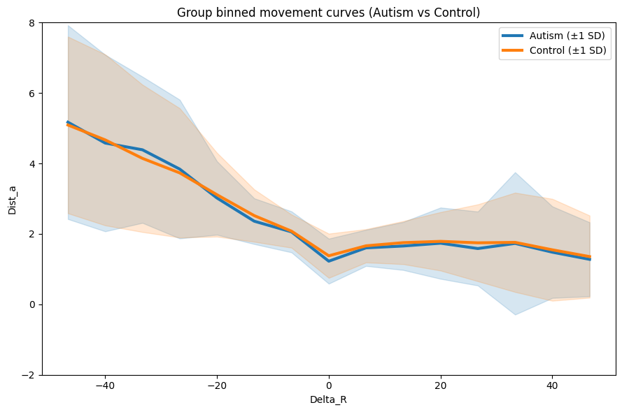
out = plot_group_overlay_binned_errorbars(
autism_df=autism_transition_all_df,
control_df=control_transition_all_df,
subject_col="subjectID",
x_col="Delta_R",
y_col="Dist_a",
bin_edges=GLOBAL_EDGES,
min_bin_n=1,
error_type="se",
y_range=global_y_range
)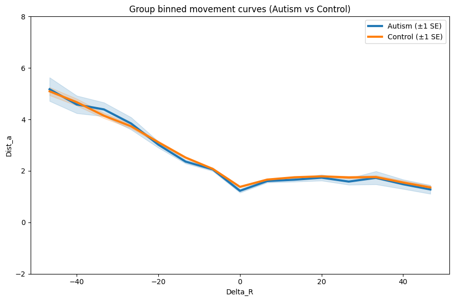
Both groups travel further after large negative reward changes, converging to shorter distances near 0 Diagnosed = slightly higher distance on negative end, SD bands are wide = lots of variability (expected.)
Trial position could inflate/confound the negative tail, not letting us see whether there is a difference…
Try residualizing this.
def residualize_dist_by_trial(transition_df, dist_col="Dist_a", trial_col="trial"):
# regress Dist_a on trial number and return residuals.
# represent movement unexplained by trial position alone
df = transition_df.copy().reset_index(drop=True)
df["Dist_a_resid"] = np.nan
for pid, sub in df.groupby("subjectID"):
sub = sub.reset_index(drop=True)
X = sub[[trial_col]].to_numpy()
y = sub[dist_col].to_numpy()
mask = np.isfinite(X.flatten()) & np.isfinite(y)
if mask.sum() < 3:
continue
reg = LinearRegression().fit(X[mask], y[mask])
# valid rows for residuals are computed
residuals = np.full(len(y), np.nan)
residuals[mask] = y[mask] - reg.predict(X[mask])
# Original index from the df is used to assign back correctly
df.loc[sub.index, "Dist_a_resid"] = residuals
return dfautism_transition_all_df = residualize_dist_by_trial(autism_transition_all_df)
control_transition_all_df = residualize_dist_by_trial(control_transition_all_df)out_resid = plot_group_overlay_binned_errorbars(
autism_df=autism_transition_all_df,
control_df=control_transition_all_df,
subject_col="subjectID",
x_col="Delta_R",
y_col="Dist_a_resid", # new residualized values
bin_edges=GLOBAL_EDGES,
min_bin_n=1,
error_type="sd",
y_range=global_y_range,
title="Group binned movement curves - residualized (Autism vs Control)"
)/usr/local/lib/python3.12/dist-packages/numpy/lib/_nanfunctions_impl.py:2035: RuntimeWarning: Degrees of freedom <= 0 for slice.
var = nanvar(a, axis=axis, dtype=dtype, out=out, ddof=ddof,
/tmp/ipykernel_3499/4127031917.py:33: RuntimeWarning: Mean of empty slice
group_mean = np.nanmean(curves, axis=0)
/usr/local/lib/python3.12/dist-packages/numpy/lib/_nanfunctions_impl.py:2035: RuntimeWarning: Degrees of freedom <= 0 for slice.
var = nanvar(a, axis=axis, dtype=dtype, out=out, ddof=ddof,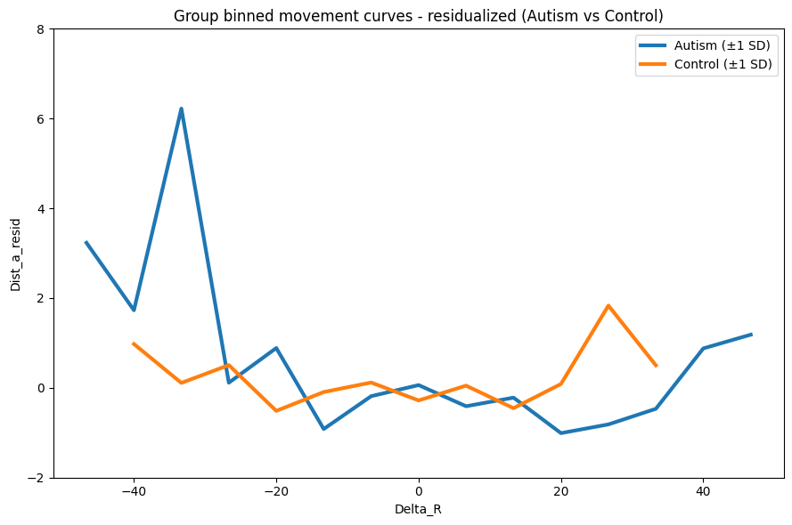
Whoa! Way different than what we originally had. However, we need the error bars. The SD values were probably lost, let’s check that.
print("Autism SD:", out_resid["autism_sd"])
print("Control SD:", out_resid["control_sd"])Autism SD: [nan nan nan nan nan nan nan nan nan nan nan nan nan nan nan]
Control SD: [nan nan nan nan nan nan nan nan nan nan nan nan nan nan nan]Yikes. How many participants is there per bin? Maybe that’s what causing the null. Maybe it’s the amount of bins?
RESID_EDGES = np.linspace(-50, 50, 11) # 10 wider bins instead of 15
out_resid = plot_group_overlay_binned_errorbars(
autism_df=autism_transition_all_df,
control_df=control_transition_all_df,
subject_col="subjectID",
x_col="Delta_R",
y_col="Dist_a_resid",
bin_edges=RESID_EDGES, # new wider bins
min_bin_n=2,
error_type="sd",
y_range=(-2, 14),
title="Group binned movement curves - residualized (Autism vs Control)"
)/usr/local/lib/python3.12/dist-packages/numpy/lib/_nanfunctions_impl.py:2035: RuntimeWarning: Degrees of freedom <= 0 for slice.
var = nanvar(a, axis=axis, dtype=dtype, out=out, ddof=ddof,
/tmp/ipykernel_3499/4127031917.py:33: RuntimeWarning: Mean of empty slice
group_mean = np.nanmean(curves, axis=0)
/usr/local/lib/python3.12/dist-packages/numpy/lib/_nanfunctions_impl.py:2035: RuntimeWarning: Degrees of freedom <= 0 for slice.
var = nanvar(a, axis=axis, dtype=dtype, out=out, ddof=ddof,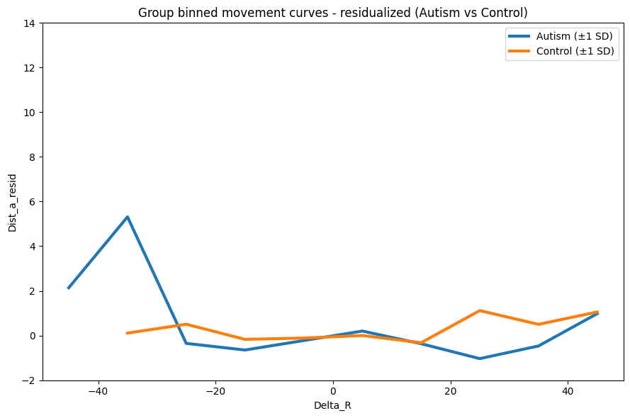
Did not do much, best to scrap this. We’ll need to go through each bin and check each N.
def diagnose_bin_coverage(df, bin_edges, subject_col="subjectID", x_col="Delta_R", y_col="Dist_a_resid"):
n_bins = len(bin_edges) - 1
centers = (bin_edges[:-1] + bin_edges[1:]) / 2
coverage = []
for pid, sub in df.groupby(subject_col):
means, counts = participant_binned_means_fast(
sub[x_col].to_numpy(),
sub[y_col].to_numpy(),
bin_edges,
min_bin_n=1
)
coverage.append(np.isfinite(means).astype(int))
coverage = np.array(coverage)
n_participants_per_bin = coverage.sum(axis=0)
for i, (c, n) in enumerate(zip(centers, n_participants_per_bin)):
print(f"Bin center {c:.1f}: {n} participants")
print("Diagnosed")
diagnose_bin_coverage(autism_transition_all_df, RESID_EDGES)
print("\n Control")
diagnose_bin_coverage(control_transition_all_df, RESID_EDGES)=== AUTISM ===
Bin center -45.0: 1 participants
Bin center -35.0: 1 participants
Bin center -25.0: 1 participants
Bin center -15.0: 1 participants
Bin center -5.0: 1 participants
Bin center 5.0: 1 participants
Bin center 15.0: 1 participants
Bin center 25.0: 1 participants
Bin center 35.0: 1 participants
Bin center 45.0: 1 participants
=== CONTROL ===
Bin center -45.0: 1 participants
Bin center -35.0: 1 participants
Bin center -25.0: 1 participants
Bin center -15.0: 1 participants
Bin center -5.0: 1 participants
Bin center 5.0: 1 participants
Bin center 15.0: 1 participants
Bin center 25.0: 1 participants
Bin center 35.0: 1 participants
Bin center 45.0: 1 participantsNo wonder…
# New fixed residualization function
def residualize_dist_by_trial(transition_df, dist_col="Dist_a", trial_col="trial"):
df = transition_df.copy().reset_index(drop=True)
df["Dist_a_resid"] = np.nan
for pid, sub in df.groupby("subjectID"):
original_index = sub.index # save BEFORE resetting
sub = sub.reset_index(drop=True)
X = sub[[trial_col]].to_numpy()
y = sub[dist_col].to_numpy()
mask = np.isfinite(X.flatten()) & np.isfinite(y)
if mask.sum() < 3:
continue
reg = LinearRegression().fit(X[mask], y[mask])
residuals = np.full(len(y), np.nan)
residuals[mask] = y[mask] - reg.predict(X[mask])
df.loc[original_index, "Dist_a_resid"] = residuals
return df
# rebuild the full concatenated transition dataframes fresh
autism_transition_list = []
for pid in autism_df["subjectID"].unique():
transition_data = make_transition_df(pid, df=autism_df)
if not transition_data.empty:
autism_transition_list.append(transition_data)
autism_transition_all_df = pd.concat(autism_transition_list).reset_index(drop=True)
control_transition_list = []
for pid in control_df["subjectID"].unique():
transition_data = make_transition_df(pid, df=control_df)
if not transition_data.empty:
control_transition_list.append(transition_data)
control_transition_all_df = pd.concat(control_transition_list).reset_index(drop=True)
# apply residualization
autism_transition_all_df = residualize_dist_by_trial(autism_transition_all_df)
control_transition_all_df = residualize_dist_by_trial(control_transition_all_df)
# verify
print("Autism participants:", autism_transition_all_df["subjectID"].nunique())
print("Control participants:", control_transition_all_df["subjectID"].nunique())
print("Autism NaN in Dist_a_resid:", autism_transition_all_df["Dist_a_resid"].isna().sum())
print("Control NaN in Dist_a_resid:", control_transition_all_df["Dist_a_resid"].isna().sum())Autism participants: 77
Control participants: 511
Autism NaN in Dist_a_resid: 0
Control NaN in Dist_a_resid: 0out_resid = plot_group_overlay_binned_errorbars(
autism_df=autism_transition_all_df,
control_df=control_transition_all_df,
subject_col="subjectID",
x_col="Delta_R",
y_col="Dist_a_resid",
bin_edges=GLOBAL_EDGES,
min_bin_n=2,
error_type="sd",
y_range=global_y_range,
title="Group binned movement curves - residualized (Autism vs Control)"
)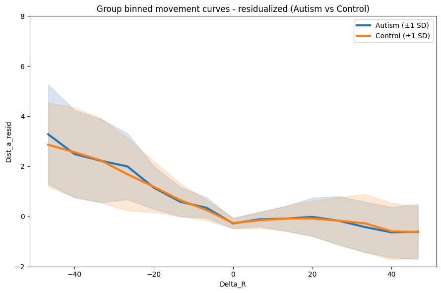